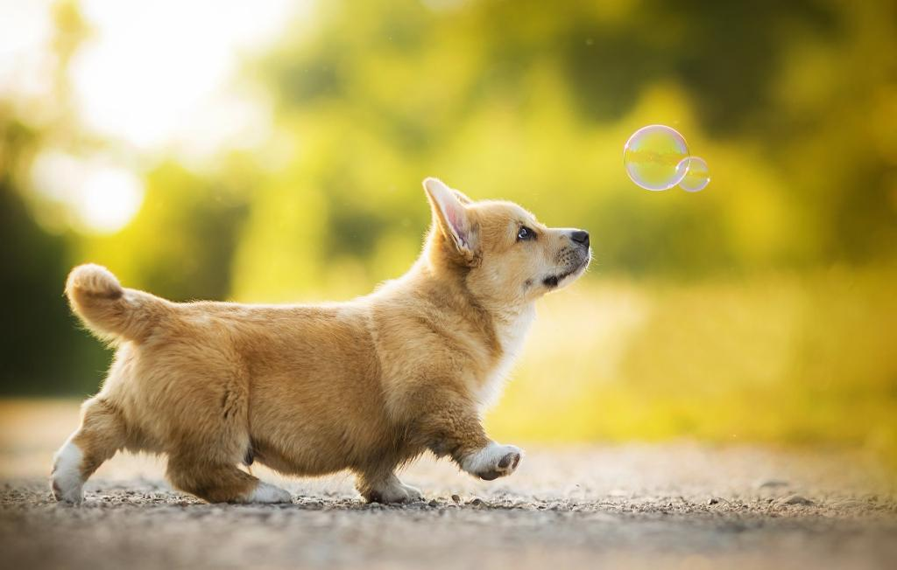

Корги

1. Введение
Их отличает добродушный, весёлый характер, высокий интеллект. Корги — настоящая овчарка в маленьком теле. Эти собаки очень умны и хитры, могут быть упрямы, поэтому важно не упустить отдельные моменты в воспитании. Рекомендую пройти курс занятий по послушанию со специалистами, чтобы в дальнейшем избежать проблем с воспитанием. Корги ориентированы на человека и стараются подстроиться под его образ жизни. Породы собак: